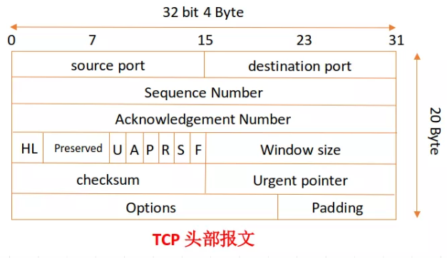

TCP
TCP（Transmission Control Protocol 传输控制协议）是一种面向连接的、可靠的、基于字节流的传输层通信协议。
通俗一点的讲，TCP 就是一个双方通信的一个规范标准（协议）。
TCP 头部报文

source port 和 distination port
两者分别为「源端口号」和「目的端口号」
一个数据包（pocket）被解封装成数据段（segment）后就会涉及到连接上层协议的端口问题。
扩展：应用程序的端口号和应用程序所在主机的 IP 地址统称为 socket（套接字），IP:端口号, 在互联网上 socket 唯一标识每一个应用程序，源端口+源IP+目的端口+目的IP称为”套接字对“，一对套接字就是一个连接，一个客户端与服务器之间的连接。
Sequence Number
称为「序列号」。用于 TCP 通信过程中某一传输方向上字节流的每个字节的编号，为了确保数据通信的有序性，避免网络中乱序的问题。接收端根据这个编号进行确认，保证分割的数据段在原始数据包的位置。
PS：初始序列号由自己定，而后绪的序列号由对端的 ACK 决定：SN_x = ACK_y (x 的序列号 = y 发给 x 的 ACK)，这里后边会讲到。
Acknowledgment Numbe
称为「确认序列号」。确认序列号是接收确认端所期望收到的下一序列号。确认序号应当是上次已成功收到数据字节序号加1，只有当标志位中的 ACK 标志为 1 时该确认序列号的字段才有效。主要用来解决不丢包的问题。
若确认号=N，则表明：到序号N-1为止的所有数据都已正确收到。
在这里，现在我们只需知道它的作用是什么，就是在数据传输的时候是一段一段的，都是由序列号进行标识的，所以说，接收端每接收一段，之后就想要的下一段的序列号就称为「确认序列号」。
TCP Flag
TCP 首部中有 6 个标志比特，它们中的多个可同时被设置为 1，主要是用于操控 TCP 的状态机的，依次为URG，ACK，PSH，RST，SYN，FIN。
- ACK
这个标识可以理解为发送端发送数据到接收端，发送的时候 ACK 为 0，标识接收端还未应答，一旦接收端接收数据之后，就将 ACK 置为 1，发送端接收到之后，就知道了接收端已经接收了数据。
此标志表示「应答域有效」，就是说前面所说的TCP应答号将会包含在 TCP 数据包中；有两个取值：0 和 1，为 1 的时候表示应答域有效，反之为 0； - SYN
表示「同步序列号」，是 TCP 握手的发送的第一个数据包
用来建立 TCP 的连接。SYN 标志位和 ACK 标志位搭配使用，当连接请求的时候，SYN=1，ACK=0连接被响应的时候，SYN=1，ACK=1；这个标志的数据包经常被用来进行端口扫描。扫描者发送一个只有 SYN 的数据包，如果对方主机响应了一个数据包回来 ，就表明这台主机存在这个端口。 - FIN
表示发送端已经达到数据末尾，也就是说双方的数据传送完成，没有数据可以传送了，发送FIN标志位的 TCP 数据包后，连接将被断开。这个标志的数据包也经常被用于进行端口扫描。
这个很好理解，就是说，发送端只剩最后的一段数据了，同时要告诉接收端后边没有数据可以接受了，所以用FIN标识一下，接收端看到这个FIN之后，哦！这是接受的最后的数据，接受完就关闭了。Window size
称为滑动窗口大小。所说的滑动窗口，用来进行流量控制。
三次握手与四次挥手
三次握手
我要和你建立链接，你真的要和我建立链接么，我真的要和你建立链接，成功
初始状态：客户端处于closed(关闭) 状态，服务器处于listen(监听) 状态。
第一次握手：Client将标志位SYN置为1，随机产生一个值seq=J，并将该数据包发送给Server，Client进入SYN_SENT状态，等待Server确认。
第二次握手：Server收到数据包后由标志位SYN=1知道Client请求建立连接，Server将标志位SYN（服务端）和ACK（服务端）都置为1，ack=J(seq)+1(ACK=1)，随机产生一个值seq=K，并将该数据包发送给Client以确认连接请求，Server进入SYN_RCVD状态。
第三次握手：Client收到确认后，检查ack是否为J+1，ACK（服务端）是否为1，如果正确则将标志位ACK（客户端）置为1，ack=K+1，并将该数据包发送给Server，Server检查ack是否为K+1，ACK是否为1，如果正确则连接建立成功，Client和Server进入ESTABLISHED状态，完成三次握手，随后Client与Server之间可以开始传输数据了。

四次挥手
我要和你断开链接；好的，断吧。我也要和你断开链接；好的，断吧）
第一次挥手：Client发送一个FIN，用来关闭Client到Server的数据传送，Client进入FIN_WAIT_1状态。
第二次挥手：Server收到FIN后，发送一个ACK给Client，确认序号为收到序号+1（与SYN相同，一个FIN占用一个序号），Server进入CLOSE_WAIT状态。此时TCP链接处于半关闭状态，即客户端已经没有要发送的数据了，但服务端若发送数据，则客户端仍要接收。
第三次挥手：Server发送一个FIN，用来关闭Server到Client的数据传送，Server进入LAST_ACK状态。
第四次挥手：Client收到FIN后，Client进入TIME_WAIT状态，接着发送一个ACK给Server，确认序号为收到序号+1，Server进入CLOSED状态，完成四次挥手。

综合理解

为什么 TCP 链接需要三次握手，两次不可以么
“三次握手” 的目的是为了防止已失效的链接请求报文突然又传送到了服务端，因而产生错误。
正常的情况：A 发出连接请求，但因连接请求报文丢失而未收到确认，于是 A 再重传一次连接请求。后来收到了确认，建立了连接。数据传输完毕后，就释放了连接。A 共发送了两个连接请求报文段，其中第一个丢失，第二个到达了 B。没有 “已失效的连接请求报文段”。
现假定出现了一种异常情况：即 A 发出的第一个连接请求报文段并没有丢失，而是在某个网络结点长时间的滞留了，以致延误到连接释放以后的某个时间才到达 B。本来这是一个早已失效的报文段。但 B 收到此失效的连接请求报文段后，就误认为是 A 再次发出的一个新的连接请求。于是就向 A 发出确认报文段，同意建立连接。
假设不采用“三次握手”，那么只要 B 发出确认，新的连接就建立了。由于现在 A 并没有发出建立连接的请求，因此不会理睬 B 的确认，也不会向 B 发送数据。但 B 却以为新的运输连接已经建立，并一直等待 A 发来数据。这样，B 的很多资源就白白浪费掉了。采用“三次握手”的办法可以防止上述现象发生。
为什么要四次挥手？
TCP 协议是一种面向连接的、可靠的、基于字节流的运输层通信协议。TCP 是全双工模式，这就意味着，当 A 向 B 发出 FIN 报文段时，只是表示 A 已经没有数据要发送了，而此时 A 还是能够接受到来自 B 发出的数据；B 向 A 发出 ACK 报文段也只是告诉 A ，它自己知道 A 没有数据要发了，但 B 还是能够向 A 发送数据。所以想要愉快的结束这次对话就需要四次挥手。
TCP 协议如何来保证传输的可靠性
TCP 提供一种面向连接的、可靠的字节流服务。其中，面向连接意味着两个使用 TCP 的应用（通常是一个客户和一个服务器）在彼此交换数据之前必须先建立一个 TCP 连接。在一个 TCP 连接中，仅有两方进行彼此通信；而字节流服务意味着两个应用程序通过 TCP 链接交换 8 bit 字节构成的字节流，TCP 不在字节流中插入记录标识符。
对于可靠性，TCP通过以下方式进行保证：
- 数据包校验：目的是检测数据在传输过程中的任何变化，若校验出包有错，则丢弃报文段并且不给出响应，这时TCP发送数据端超时后会重发数据；
- 对失序数据包重排序：既然TCP报文段作为IP数据报来传输，而IP数据报的到达可能会失序，因此TCP报文段的到达也可能会失序。TCP将对失序数据进行重新排序，然后才交给应用层；
- 丢弃重复数据：对于重复数据，能够丢弃重复数据；
- 应答机制：当TCP收到发自TCP连接另一端的数据，它将发送一个确认。这个确认不是立即发送，通常将推迟几分之一秒；
- 超时重发：当TCP发出一个段后，它启动一个定时器，等待目的端确认收到这个报文段。如果不能及时收到一个确认，将重发这个报文段；
- 流量控制：TCP连接的每一方都有固定大小的缓冲空间。TCP的接收端只允许另一端发送接收端缓冲区所能接纳的数据，这可以防止较快主机致使较慢主机的缓冲区溢出，这就是流量控制。TCP使用的流量控制协议是可变大小的滑动窗口协议。